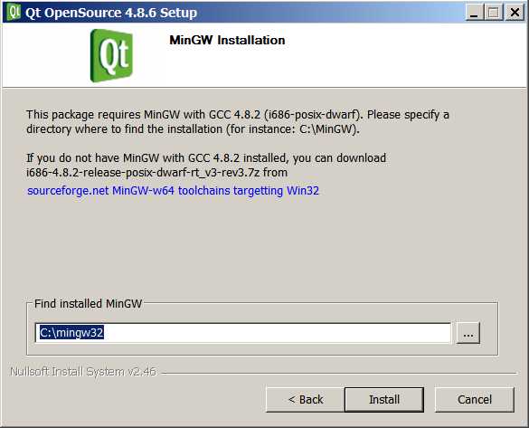
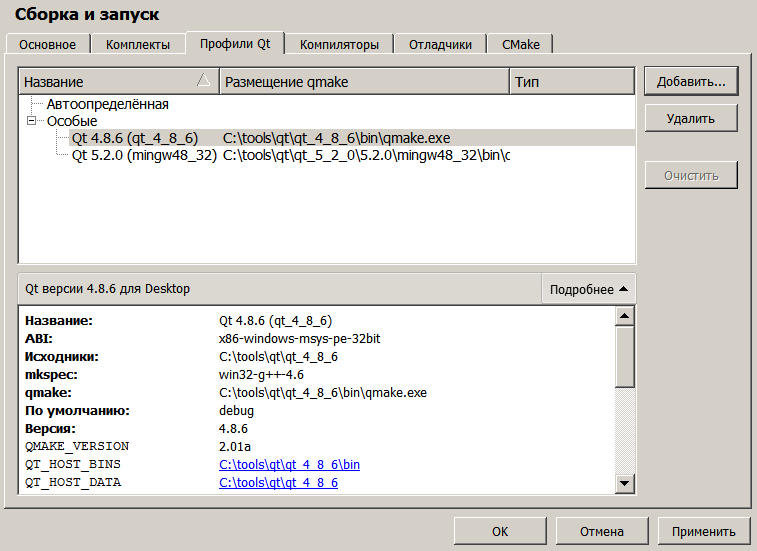

Для работы с Qt 4-й версии необходимо все компоненты устанавливать отдельно (В 5-й версии Qt это недоразумение было исправлено). Для работы потребуется три программы:
Каждый компонент устанавливается в отдельный каталог. Я использую каталоги:
C:\tools\qt\mingw_4_8_2
C:\tools\qt\qt_4_8_6
C:\tools\qt\qt_creator_4_0_2
Но можно использовать любые.
Последовательность установки: MinGW - Qt - Qt Creator.
Утилиты MinGw 4.8.2
Прямая ссылка для скачивания MinGw 4.8.2:
В момент инсталляции указывается каталог типа C:\tools\qt\mingw_4_8_2.
Qt 4.8.6
Сам Qt SDK версии 4.8.6 берется здесь:
http://download.qt.io/archive/qt/4.8/4.8.6/
Если нет Microsoft Visual Studio, то нужна версия Qt для компилятора MinGw. В имени инсталлятора должны присутсвовать буквы mingw. Прямой линк на Qt 4.8.6 для MinGw:
http://download.qt.io/archive/qt/4.8/4.8.6/qt-opensource-windows-x86-mingw482-4.8.6-1.exe
В момент инсталляции указывается каталог типа C:\tools\qt\qt_4_8_6.
Кроме каталога инсталляции, инсталлятор запросит каталог, в котором находится компилятор MinGw:

Нужно указать каталог, куда был установлен MinGw: C:\tools\qt\mingw_4_8_2.
Qt Creator 4.0.2
Qt Creator 4.0.2 берется со страницы:
https://www.qt.io/download-open-source/
Прямой линк на загрузку:
В момент инсталляции указывается каталог типа C:\tools\qt\qt_creator_4_0_2.
Настройка среды разработки Qt Creator 4.0.2
В Qt Creator первым делом необходимо зайти в Инструменты - Параметры - Сборка и запуск - Вкладка "Профили Qt". Там нужно нажать кнопку "Добавить", задать имя профиля "Qt 4.8.6", и указать месторазмещение файла qmake.exe. Он находится в подкаталоге /bin каталога, куда был установлен Qt 4.8.6:

Нажав кнопку "Подробнее", нужно посмотреть, какое ABI использует эта сборка Qt 4.8.6. Эта информация потребуется ниже.
Далее нужно переключиться на вкладку "Компиляторы". Нажимается нопка "Добавить", вводится название "MinGW 4.8.2", и указывается месторазмещение исполняемого файла компилятора g++, который находится в подкаталоге /bin каталога, куда был установлен MinGW.
Внимание! Нужно указывать именно файл g++! В том же каталоге есть файл c++, и если его указать, то ничего не заработает.
Так же нужно проверить, чтобы строка ABI соответствовала ABI, который был записан для сборки Qt. Если строка не соответствует, ее надо исправить путем выбора пункта "<особое>" в выпадающем списке и выбра нужных пунктов в последующих выпадающих списках.
Внимание! На низких разрешениях мониторов окно настройки может быть узким, и в него не будут влазить выпадающие списки -pe и -32bit (как на картинке выше). В этом случае, надо временно расширить окно, утащив левую часть окна за пределы монитора, и сделать правильную настройку.
Иногда, если на вкладке "Профили Qt" возле конфигурации Qt стоит красный значек с восклицательным знаком, и при этом ABI в выпадающем списке вкладки "Компиляторы" соответствует ABI вкладки "Профили Qt", то становится непонятно в чем проблема. На самом деле это небольшой глюк креатора. Чтбы его обойти, нужно в настройке ABI выбрать пункт "<особое>", и настроить вручную сегменты ABI выпадающими списками.
На этом настройка закончена. Теперь при открытии/создании проектов в Qt Creator можно добавлять конфигурацию Qt 4.8.6 путем нажатия кнопки "Добавить":

Далее можно открыть какой-нибудь небольшой тестовый проект и убедиться в работоспособности получившейся среды разработки.